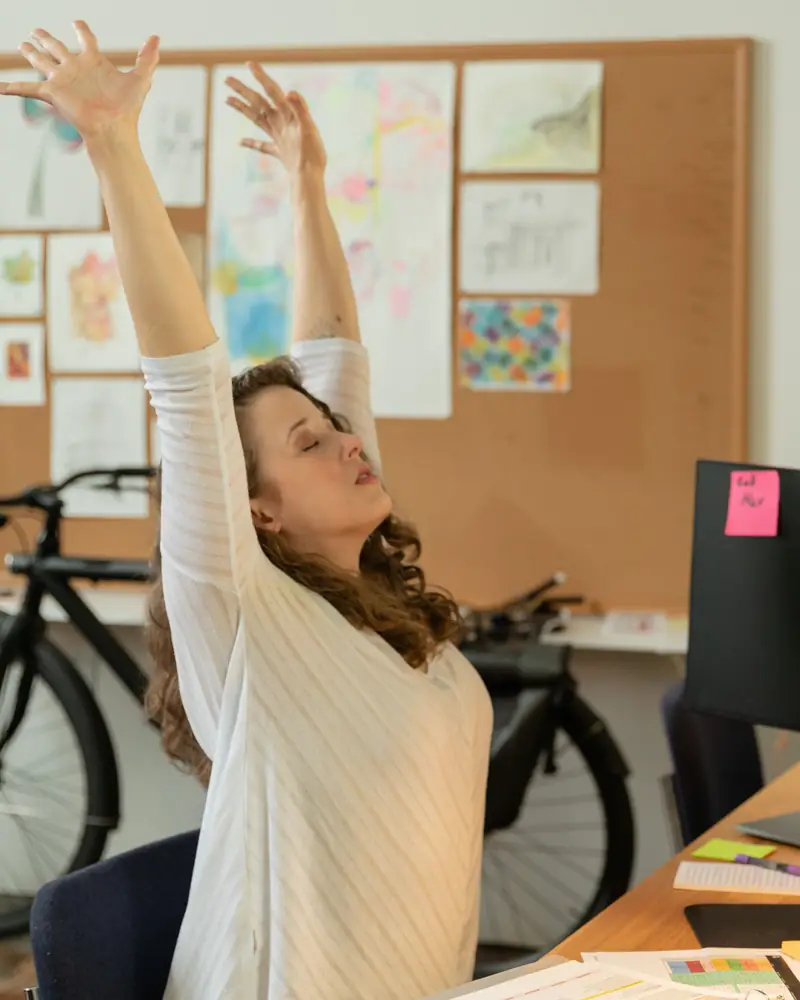
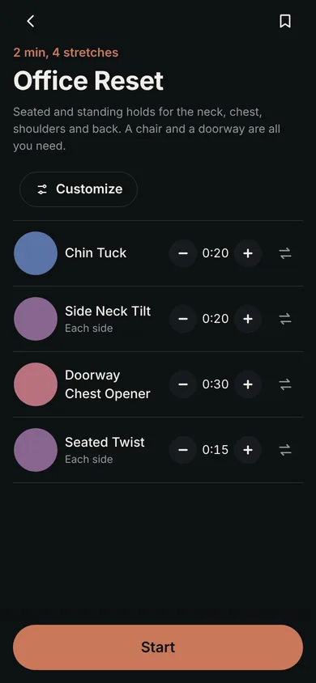

Stretch between the whistles.
MeFlex Stretch Coach times each stretch for you, with a gentle sound or voice when it's time to switch. Pick a short routine, press Start, and follow along.
Free to start. No account, and your stretching history stays on your phone.

Three minutes between games.
Made first for hockey officials and adult-league players.
Referee Between-games Reset
A three-minute standing reset between games on a long night, to keep hips, groin and calves loose.

- High Knee March
- Front Leg Swings
- Side Leg Swings
- Lateral Lunge Shifts
- Knee-to-Wall Ankle Rocks

Before and after the game, too: moving warm-ups before you skate and cool-downs with holds after, for players and for officials.
- Referee Pre-game Warm-upabout 7 minutes
- Hockey Pre-game Warm-upabout 9 minutes
- Hockey Post-game Cool-downabout 7 minutes
There are youth routines too, for young players with a parent, guardian or coach.
Try one stretch right here.
This is the timer from the app: one 30-second Low Lunge. Sound stays off unless you turn it on.
- Step one foot forward and lower the back knee onto the mat.
- Stack the front knee over the ankle, shin vertical.
- Rest your hands on the front knee and lift your chest.
- Shift your hips gently forward until you feel the front of the back hip open.
Pad the back knee with a folded towel if it presses.
A stretch should feel like mild discomfort, never pain. Ease off if it hurts.

Low Lunge
18 seconds left
Left leg forward
A still of the 30-second Low Lunge timer. With JavaScript on, you can start, pause and finish the hold here.


And for the hours at a desk.
For people who sit at a desk all day: desk breaks and office resets you can do in work clothes, standing or seated.
Office Reset
Seated and standing holds for the neck, chest, shoulders and back. A chair and a doorway are all you need.
- Chin Tuck
- Side Neck Tilt
- Doorway Chest Opener
- Seated Twist
There's a Desk Reset too: about 4 minutes for the neck, shoulders and chest after hours at a screen.
How it works
Pick a short routine, press Start, and follow along.
Change any hold
Every hold time can be changed. Each stretch has its own − and + buttons.
Ring, chime, voice
A timer ring, a soft chime, and an optional voice that reads the stretch's name.
No account
Your history, routines and settings stay on your phone.
Works offline
Once it has been opened, it keeps working without a connection.
Get a note when MeFlex Stretch Coach reaches the App Store
Not connected yet: this sign-up is switched off and sends nothing.
Until then, it runs in your browser. Try it now in your browser